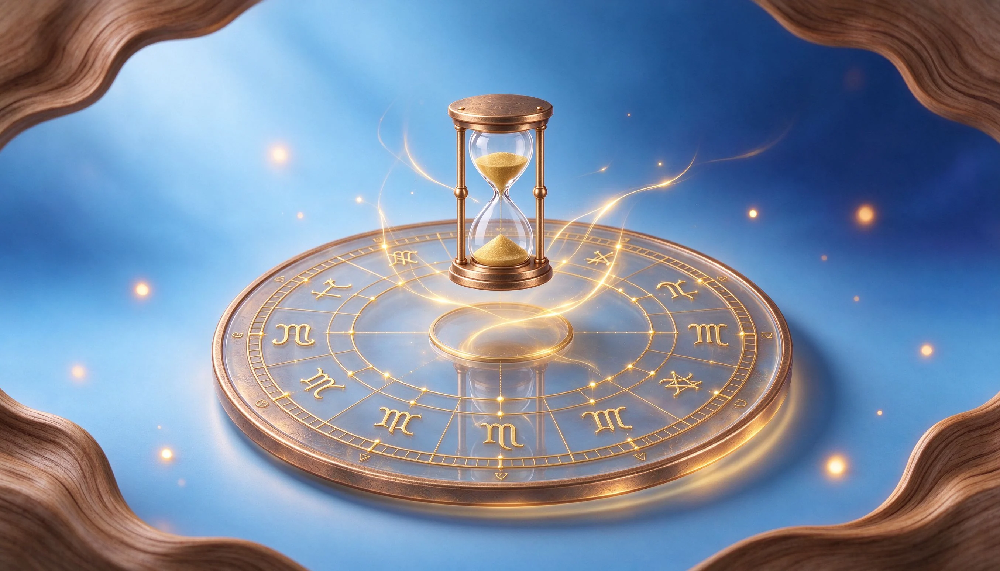
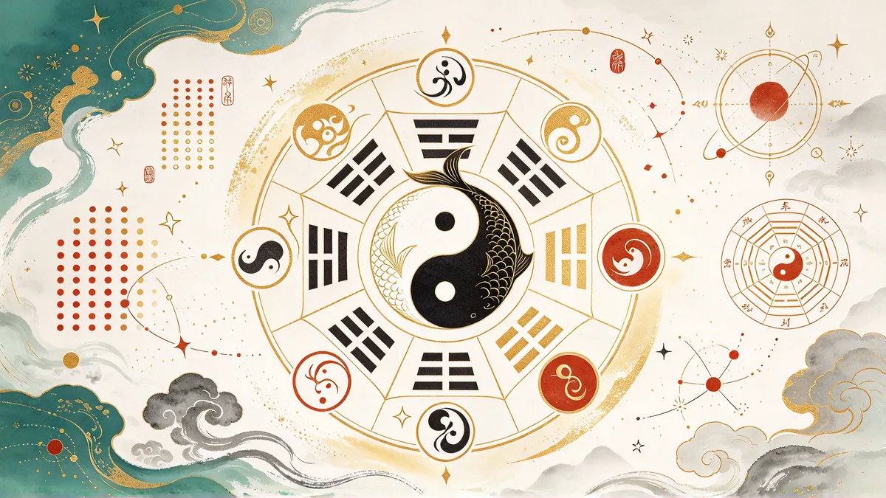
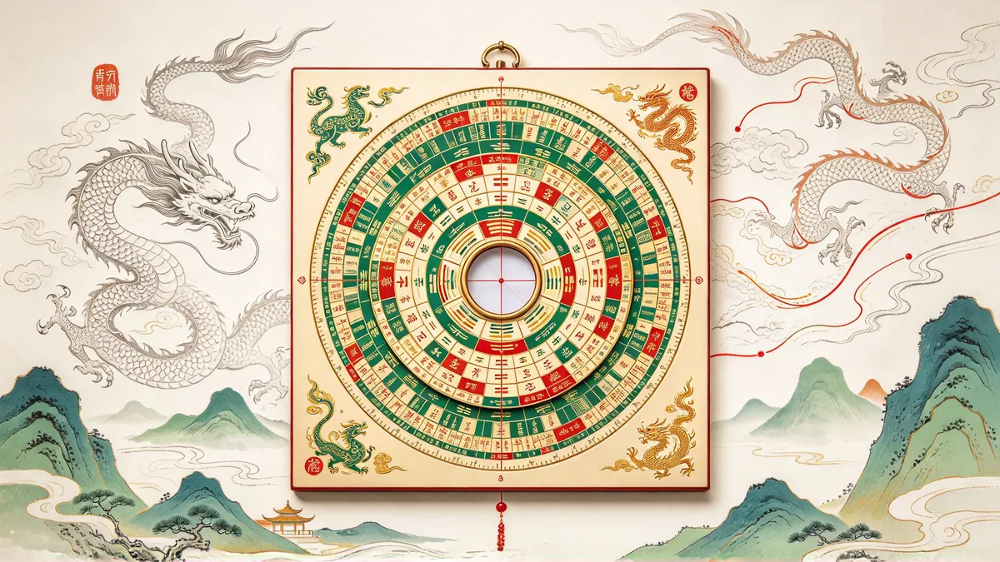

十二星座今日整體／愛情／事業運勢與幸運指數，依今日星象即時呈現。
22 張大阿爾克那＋56 張小阿爾克那，支援三牌陣、凱爾特十字與每日一牌互動抽牌。
認識你的能量類型、策略與九大能量中心，輸入出生資料即可繪製專屬能量藍圖。
集中管理你收藏的星座、塔羅與文章，快速回到關注的內容。
依出生年月日，產生一組專屬幸運數字與開運號碼。
貼心提醒：此工具為趣味與參考性質的簡化占卜，結果隨輸入或當日日期變動，僅供娛樂與自我覺察，不做重大決定依據。